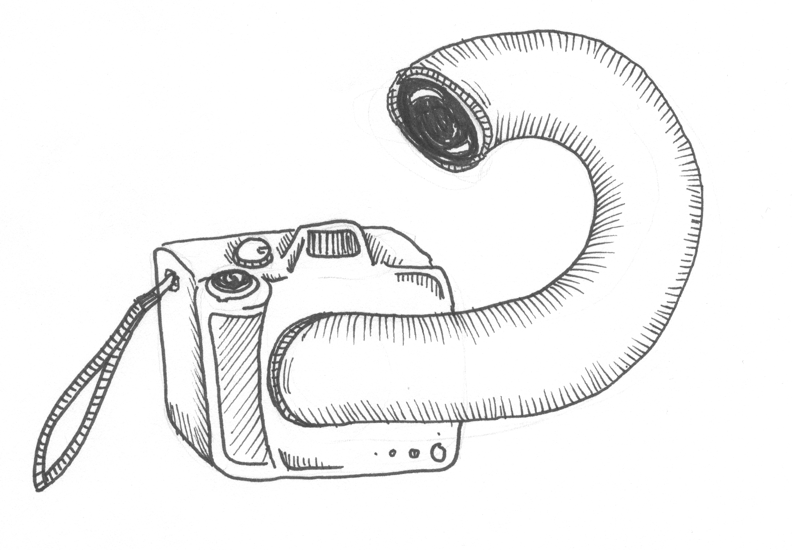
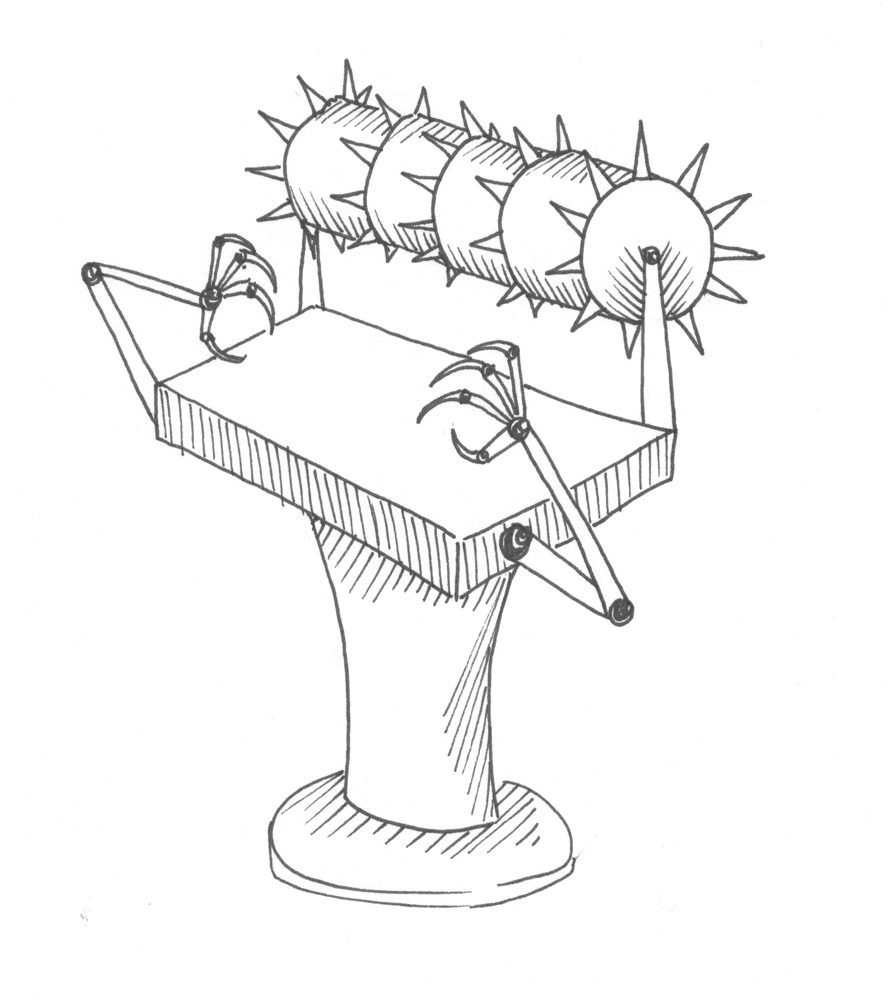
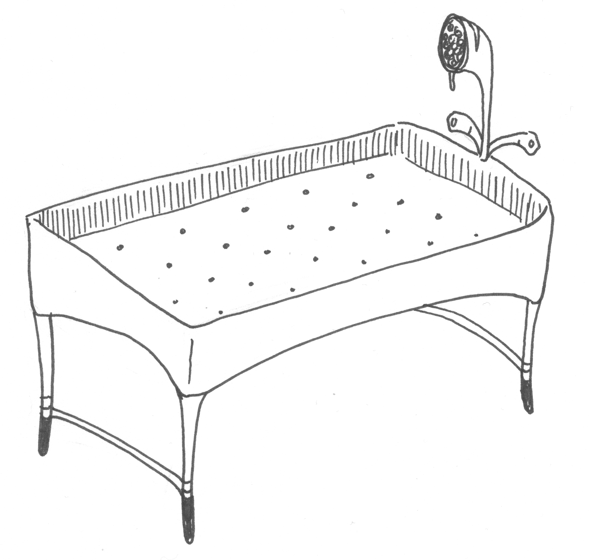
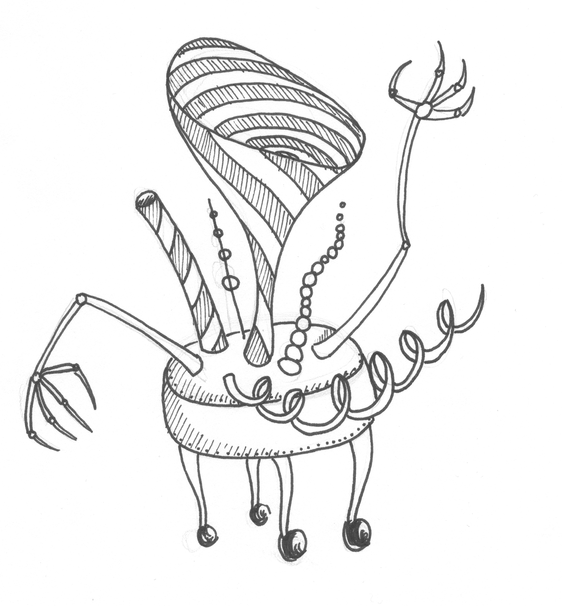
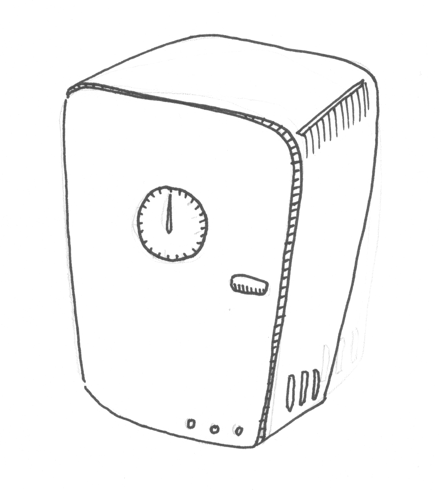
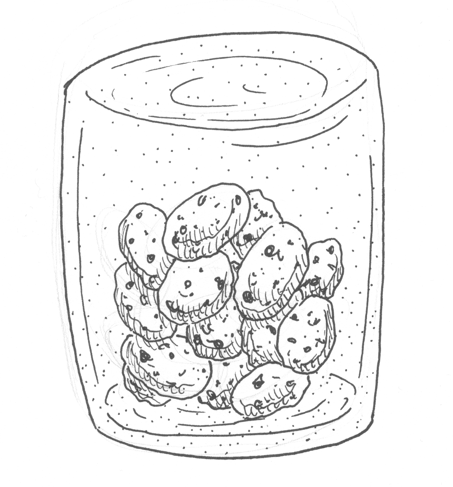
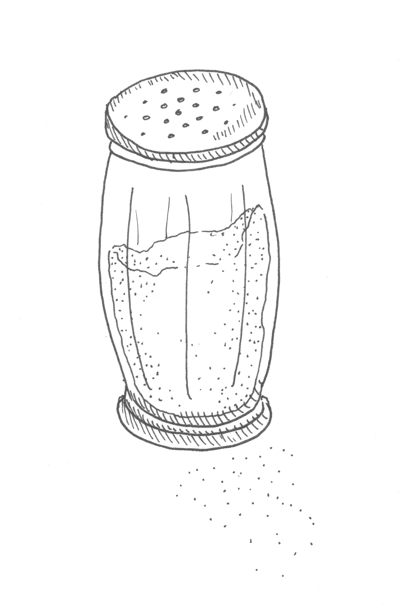
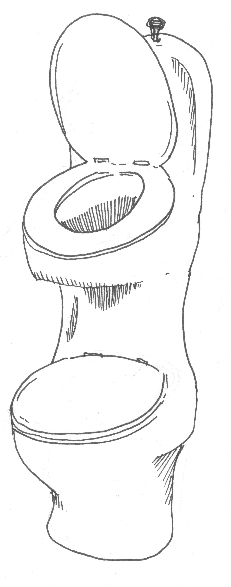
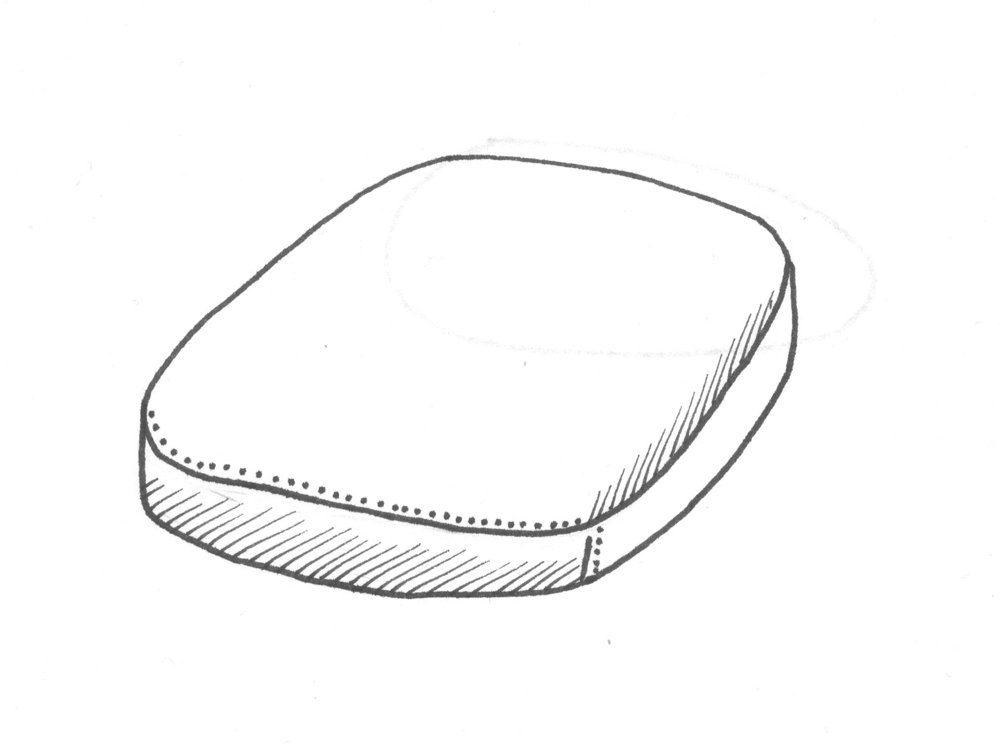
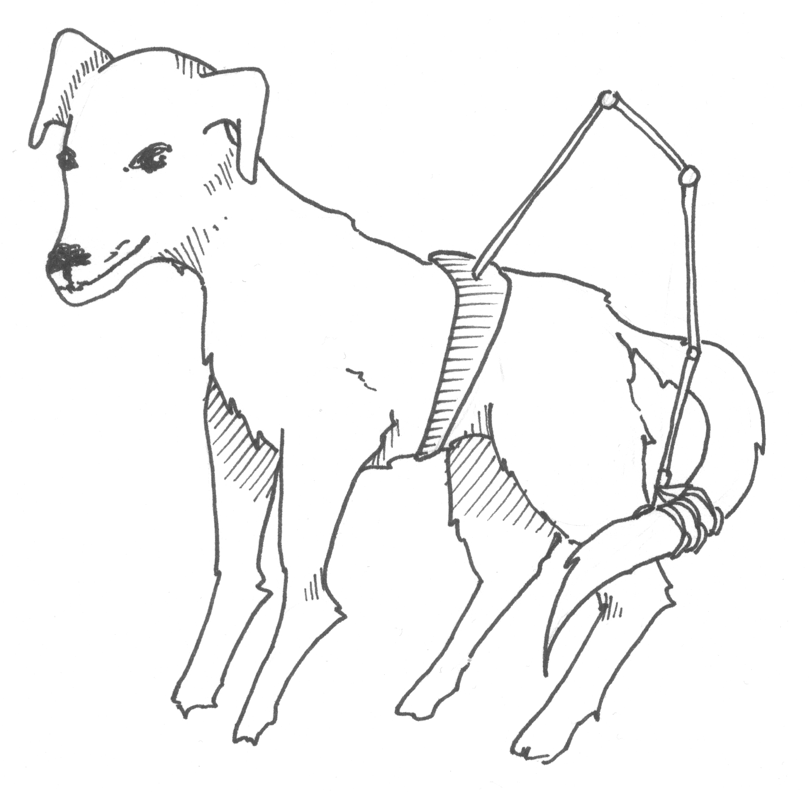

The Indispensables Co.
Menu
Home
Products
About

Vain itseään kuvaava kamera
Ilmiö isolla I:llä, josta et halua jäädä paitsi! Kamera, joka antaa selfielle aivan uuden merkityksen.

Vaatteenkulutin
Pursuaako vaatekomerosi vaatteita, joita et käytä? Onko jo aika ostaa näiden tilalle uusia? Jos tämä kuulostaa tutulta, esittelemme juuri sinulle suunnitellun vaatteenkuluttimen. Tämä innovatiivinen laite kuluttaa vanhat, ja miksei uudetkin, vaatteesi hetkessä käyttökelvottomiksi. Mitä siis odotat? Ei muuta kuin vaateostoksille hyvällä omallatunnolla!

Vaakasuihku
Kokeiltuasi vaakasuihkua, tavalliseen ei ole paluuta. Säästää sekä tilaa että aikaa. Makuuhuoneelle ei enää ole tarvetta, kun nukkuminen hoituu kätevästi vaakasuihkussa. Ajastustoiminnon ansiosta voit aloittaa yöunesi jo suihkussa ollessasi! Tai mikä olisikaan parempi herätyskello kuin raikas suihku? Ehdoton hankinta modernin yhteiskunnan menestyjälle!

Sukankadotin
Mikään ei ole ärsyttävämpää, kuin yksittäiset sukat, joiden paria ei löydy sitten mistään. Nyt tähän ihmiskuntaa vaivaavaan ongelmaan on helppo ratkaisu. Tämä patentoitua huipputeknologiaa hyödyntävä laite kadottaa parittomaksi jääneen sukan puolestasi alta aikayksikön!

Pilaannuttajakaappi
Elintarvikkeiden pilaantuminen käyttökelvottomiksi saattaa joskus kestää sietämättömän kauan. Tähän ongelmaan on nyt arkea mullistava ratkaisu. Tässä uusinta teknologiaa hyödyntävässä kaapissa pilaantuminen tapahtuu nimittäin jopa alle tunnissa! Kaappi ylläpitää optimaalisia lämpö- ja kosteusolosuhteita erilaisia elintarvikkeita varten. Valittavana on mm. kuivaelintarvikkeiden, säilykkeiden, makeisten sekä pakasteiden tehokasta pilaantumista varten räätälöidyt ohjelmat. Vaihdettavat home- ja bakteerikapselit takaavat nopean ja tasalaatuisen pilaamisen!

Keksipurkki, josta ei saa keksejä ulos
Kätevä ja vaivaton tapa varmistaa, etteivät lapset napostele keksejä luvatta. Sopii erinomaisesti myös laihduttajille! Valmistettu erikoisvahvisteisesta lasista.

Kaksipäinen suolasirotin
Tämän vallankumouksellisen suolasirottimen ansiosta sinun ei enää tarvitse vaivata päätäsi sillä, kummin päin pidät sirotinta lautasen yllä. Nyt voit ajattelun sijaan olla täysin läsnä makunautintosi parissa!

Kaksikerroksinen wc-istuin
Innovatiivinen tilaratkaisu, joka sopii ahtaimpiinkin wc-tiloihin. Unohtakaa erilliset vessat ja kopit, uusi, sosiaalinen vessassa käynnin muoto on vihdoin täällä! Tämä wc-istuin on myös aidon luonnonystävän valinta, uraauurtavan kerrosteknologian ansiosta istuin kuluttaa jopa puolet vähemmän vettä tavalliseen istuimeen verrattuna. Sopii oivallisesti myös työpaikan saniteettitiloihin, vessatauko ei ole enää pätevä syy tärkeän kokouksen keskeyttämiseen, eikä wc:n tarvitse enää olla työpaikan hierarkioista vapaa tila!

Jalaton tuoli ilman selkänojaa
Yksinkertaisen nerokas muotoilu, joka tekee tämän tuolin säilyttämisestä suorastaan naurettavan helppoa.

Hännän kiinniottoväline koiraa varten
Kuuluuko hännän jahtaaminen sinunkin koirasi päivittäiseen rutiiniin? Eikö sinun käykin sääliksi näitä uutteria otuksia, joiden yrityksiä ei koskaan palkita? Tarjoamme sinulle nyt ainutlaatuisen mahdollisuuden osoittaa, kuinka paljon sinä välität tärkeästä ystävästäsi. Sinun ei tarvitse kuin kiinnittää tämä elegantti ja yksinkertainen väline koirasi vyötärölle, niin rakkaan lemmikkisi unelma voi vihdoin toteutua! Oivallinen lahjaidea kenelle tahansa koiranomistajalle! Kuvan koira ei sisälly toimitukseen.